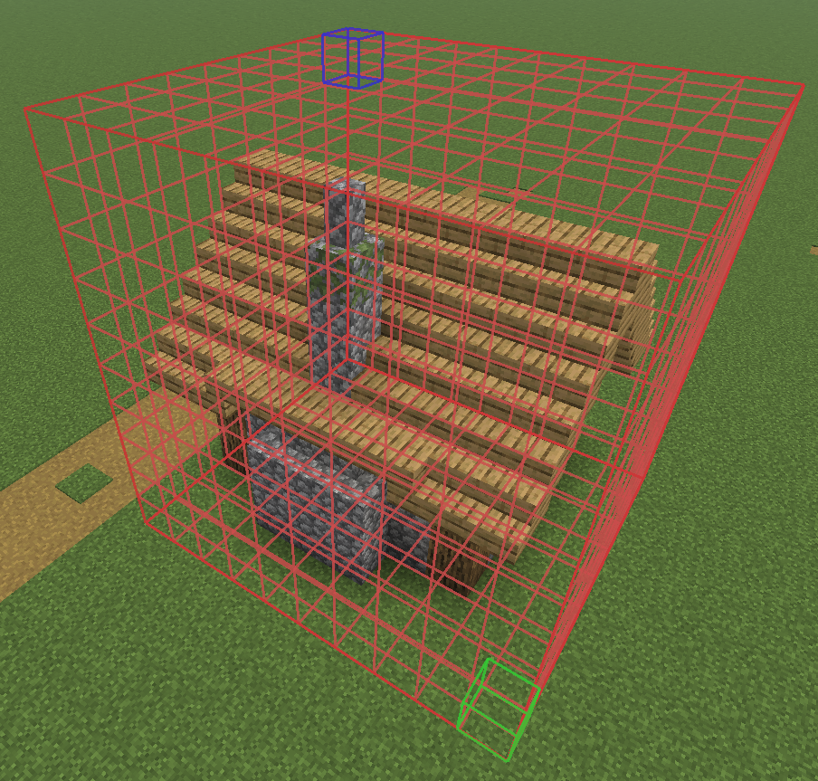

WorldEdit und WorldEditCUI
WorldEdit ist ein mächtiger Bau- und Welteditor für Minecraft, der es ermöglicht, große Bereiche effizient zu bearbeiten.
WorldEditCUI ergänzt WorldEdit um eine grafische Anzeige der markierten Auswahlbereiche.
Wir nutzen den WorldEdit-Mod in Verbindung mit der WorldEditCUI-Mod in unserer Minecraft-Installation.
Mit WorldEdit führen wir aufwendige Änderungen an der Welt aus. Typische Möglichkeiten sind:
- Bereiche mit //pos1 und //pos2 markieren
- Blöcke setzen oder ersetzen, z. B. //set stone
- Wände erzeugen mit //walls
- Bereiche kopieren, verschieben und drehen mit //copy, //move und //rotate
- Konstruktionen als //schem save speichern und wieder laden
- große Flächen schnell bearbeiten
- Formen wie Kugeln, Zylinder oder Hohlkörper erzeugen
- mit Brushes Gelände formen oder Blöcke „malen“
- Aktionen mit //undo zurücknehmen
WorldEditCUI ergänzt WorldEdit nur um die grafische Darstellung.
Du siehst damit direkt die beiden Auswahlpunkte und Größe und Lage der Auswahl
Schau dir die WorldEditCUI Galerie an.

-
Tinkercad meets Minecraft
Eigene 3D-Modelle werden in Tinkercad entworfen, als .schematic-Datei exportiert und anschließend in einer Minecraft-Welt verwendet.
-
WorldEdit installieren und testen
In dieser Anleitung wird erklärt, wie man WorldEdit in Minecraft installiert und testet.
-
.schematic-Datei in eine Minecraft-Welt einfügen
Eine .schematic-Datei kann in Minecraft mit der Mod "WorldEdit" eingefügt werden.
Schematic-Dateien
Vorhandene Dateien zum Herunterladen:
- Dateiliste wird geladen ...